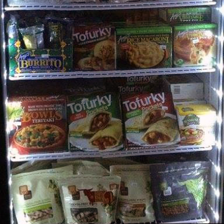
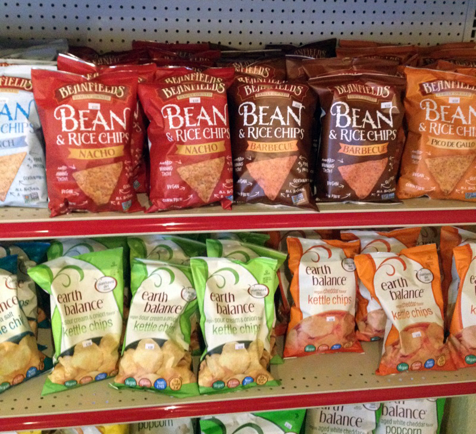
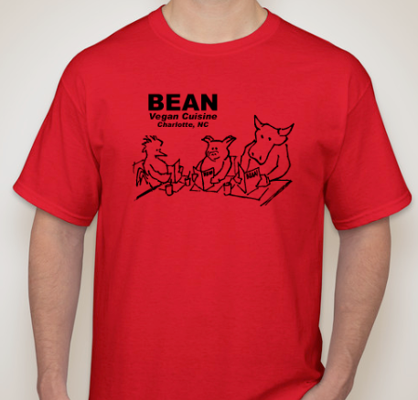

Now Open: Charlotte's ONLY Full Scale Vegan Market!
Location
The market is attached to the restaurant, so now you can stock up on your vegan staples during your regularly scheduled visits to Bean! Market hours are the same as as the restaurant.
Convenience
There are plenty of options for convenience foods in the market as well. You can find frozen meat alternatives in addition to frozen heat and eat meals like burritos and pizza.
Essentials
You will find a plethora of vegan essentials in the market, including dairy free milks, butters, and cheeses, as well as meat alternatives (including the burger mix and soy curls that Bean uses in their own cooking!). Outside of the refrigerator case you can find pasta sauces, condiments, soups, dressings and so much more.
Snacks
Delicious snacks galore! Crackers, chips, sodas, you're certain to find something craveable.
Bean-made
A special addition to the market is a selection of house-made items that you have enjoyed from the restaurant. This includes house-made cheese, andouille sausage, cookies and dressings.
Bean Merch
Don't forget to pick up some Bean merchandise for the Beanstalker in your life. You can find t-shirts, stickers, and even gift cards!